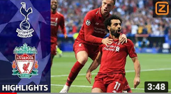

Liverpool

Clubinfo
Liverpool F.C. is een Engelse voetbalclub die is opgericht in 1892 door John Holding. Holding was de eigenaar van een stadion aan de weg Anfield road. Deze verhuurde hij aan de
voetbalclub Everton maar na een onenigheid over de huur verkaste deze en was de voetbalclub Liverpool F.C. geboren. In de jaren zeventig en tachtig behoorde Liverpool tot de
echte Europese top en ook in de Engelse competitie zijn ze met 18 landstitels een echte topper. Helaas kende de club ook een aantal grote tegenslagen en was het betrokken
bij twee van de grootste tragedies in het Europese voetbal.

Finale Champions League 2018/2019
Liverpool had afgelopen jaar de Champions League gewonnen in de finale tegen Tottenham Hotspur, met 1-0. In de halve finale had Liverpool een 3-0 achterstand, recht weten te
zetten door thuis met 4-0 te winnen. Het was volgens
vele Liverpool supporters 1 van de meest legendarische wedstrijden ooit van Liverpool in de Champions League.
Daardoor kwam Liverpool in de finale en die werd gespeeld tegen Tottenham Hotspur, de samenvatting is hierboven te vinden.
Heizeldrama
In de Europacup finale van 1985 speelde Liverpool tegen Juventus in het Heizelstadion in Brussel. Tussen de twee supportersgroepen braken ongeregeldheden uit en bij de paniek
die hierdoor ontstond kwamen 39 mensen om het leven. Het gevolg was dat Liverpool 6 jaar werd uitgesloten van Europees voetbal.
Hillsborough
Vier jaar na het eerste drama kreeg de club te maken met nog een tragedie. Tijdens de halve finale van de FA Cup in het Hillsborough stadion kwamen er 96 mensen om het leven.
4000 voetbalfans kwamen zonder kaartje de tribunes op en raakte hierdoor in de verdrukking, door de paniek die er ontstond en een slecht optreden van de politie stierven er
96 personen. Bij het Anfield stadion is een speciaal memorial opgericht om de slachtoffers te herdenken.
Supporters
De fanatieke supporters van Liverpool staan achter het doel op de tribune die in de volksmond bekend staat als "The Kop". Elke wedstrijd beginnen de supporters met het zingen
van het lied you'll never walk alone.
You'll Never Walk Alone lyrics:
When you walk through a storm
Hold your head up high
And don't be afraid of the dark
At the end of a storm
There's a golden sky
And the sweet silver song of a lark
Walk on through the wind
Walk on through the rain
Though your dreams be tossed and blown
Walk on, walk on
With hope in your heart
And you'll never walk alone
You'll never walk alone
Walk on, walk on
With hope in your heart
And you'll never walk alone
You'll never walk alone.
Stadium
De thuisbasis van Liverpool is al sinds 1892 stadion Anfield. Het stadion is misschien wel het meest sfeervolle stadion in Europa. Wanneer het 'You'll Never Walk Alone'
voor de aftrap van een wedstrijd van de tribune galmt is de toon meteen gezet.
Een voetbalreis naar Liverpool staat absoluut garant voor een onvergetelijke ervaring